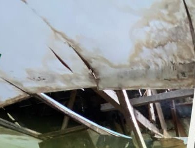
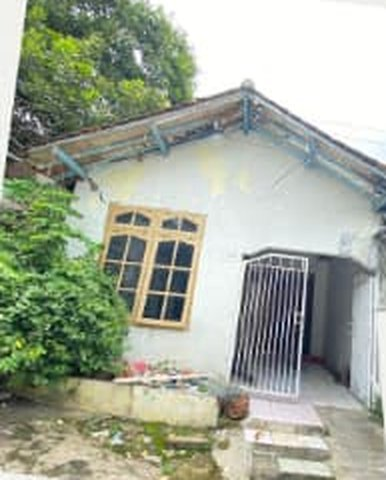
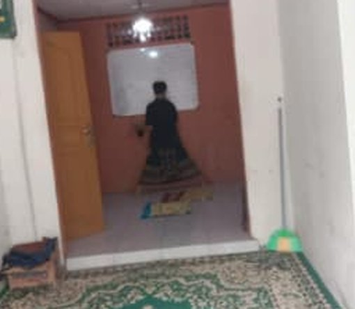
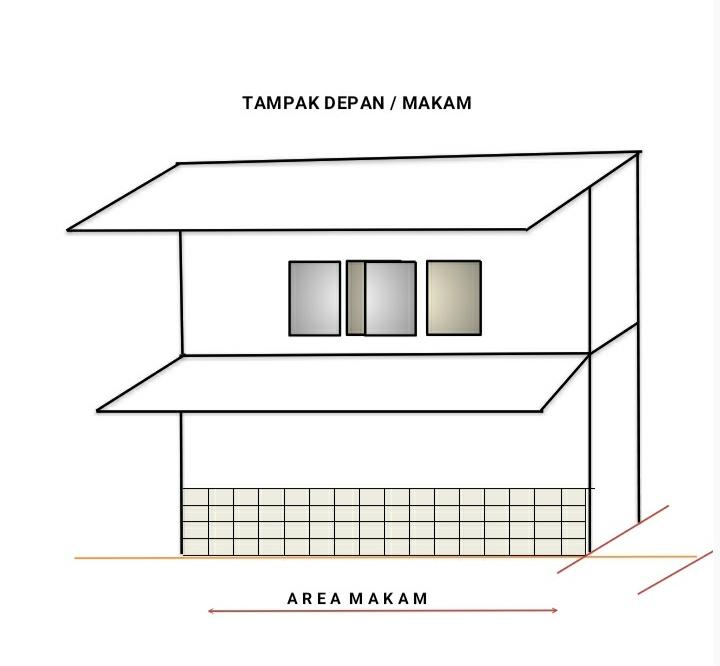
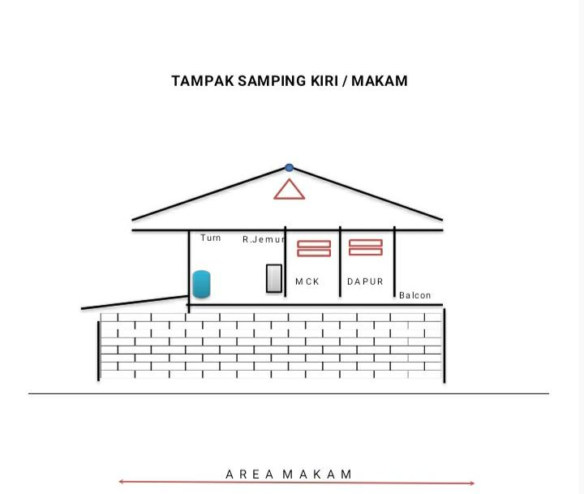
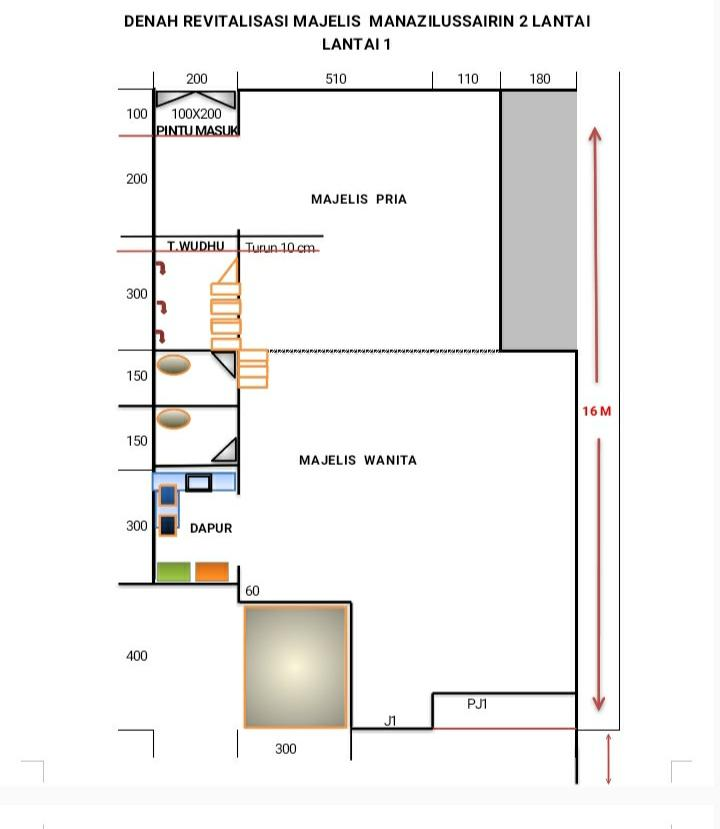
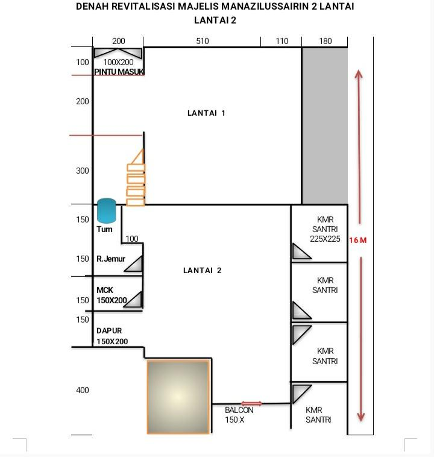
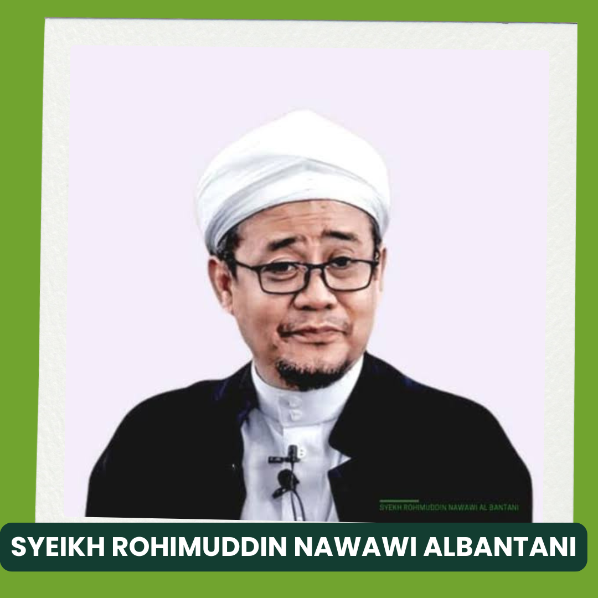
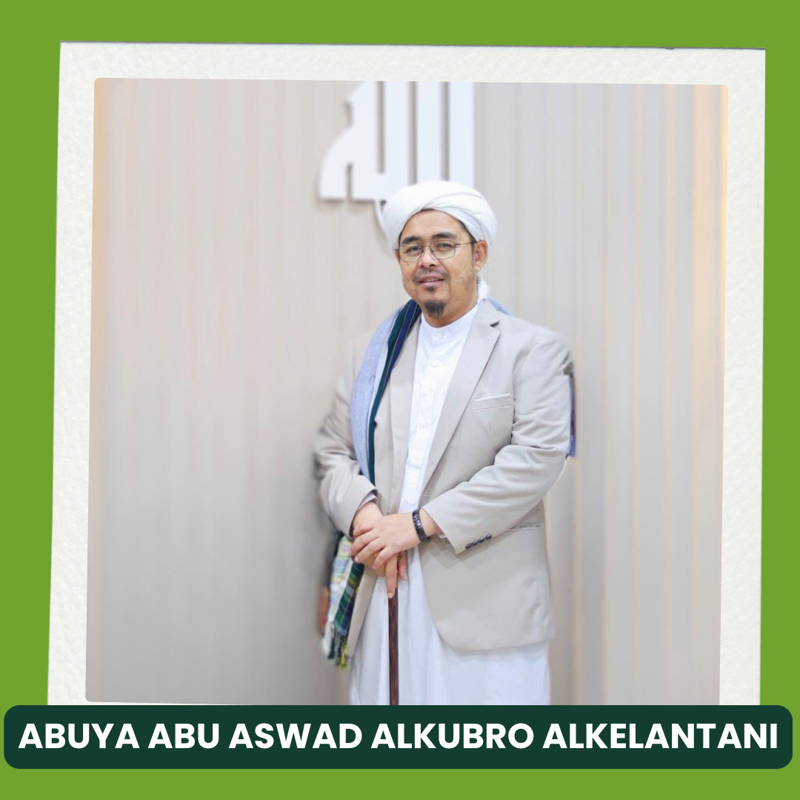

01
Pembebasan Lahan
Menyiapkan kebutuhan lahan pembangunan.
Pesantren Islam Nur Ash-Shafa membutuhkan tempat yang layak untuk belajar, beribadah, dan tumbuh bersama. Mari hadirkan manfaat melalui sedekah jariyah untuk pembangunan pesantren.
“Jika manusia mati, maka terputuslah amalannya kecuali tiga perkara: (1) sedekah jariyah, (2) ilmu yang dimanfaatkan, (3) do'a anak yang sholeh.”Abu Hurairah radhiyallahu 'anhu · HR. Muslim no. 1631
Saat ini, bangunan pesantren masih membutuhkan perbaikan. Sebagian plafon rusak dan bocor, sementara para santri belajar dan beraktivitas di ruang yang masih sederhana.
Dukungan Anda akan membantu menghadirkan fasilitas pendidikan, asrama, sarana ibadah, dan kebutuhan dasar para santri secara bertahap.

Inilah kondisi bangunan pesantren saat ini. Foto-foto ini memperlihatkan mengapa tempat belajar dan beribadah yang lebih layak sangat dibutuhkan.


Ada lima kebutuhan utama yang ingin diwujudkan secara bertahap. Setiap donasi menjadi bagian dari ikhtiar menghadirkan fasilitas yang lebih layak bagi para santri.
Menyiapkan kebutuhan lahan pembangunan.
Fasilitas asrama bagi para santri.
Ruang kegiatan belajar mengajar.
Fasilitas untuk kegiatan ibadah.
Fasilitas sanitasi dasar.
Berikut gambaran rencana bangunan dan denah pengembangan pesantren. Ketuk gambar untuk melihat detailnya lebih dekat.




Mari ikut mendukung pembangunan Pesantren Islam Nur Ash-Shafa melalui rekening resmi yayasan. Setelah berdonasi, kirimkan bukti transfer melalui WhatsApp agar donasi Anda dapat kami konfirmasi.
Setelah transfer, silakan kirim bukti donasi melalui salah satu nomor WhatsApp berikut:
Saksikan dokumentasi kondisi pesantren dan ikhtiar pembangunan yang sedang berjalan. Video ini memperlihatkan keadaan nyata di lapangan agar sahabat donatur dapat mengenal kebutuhan kami dengan lebih dekat.
Lihat video dakwah lainnya di TikTokDoa dan dukungan para pengasuh serta pembina menjadi bagian dari ikhtiar pembangunan Pesantren Islam Nur Ash-Shafa.



“Perumpamaan orang-orang yang menafkahkan hartanya di jalan Allah serupa dengan sebutir benih yang menumbuhkan tujuh bulir, pada tiap-tiap bulir seratus biji. Allah melipatgandakan (pahala) bagi siapa yang Dia kehendaki, dan Maha Luas karunia-Nya lagi Maha Mengetahui.”QS. Al-Baqarah: 261
Terima kasih atas doa dan dukungan untuk pembangunan Pesantren Islam Nur Ash-Shafa. Semoga Allah membalas setiap kebaikan dengan sebaik-baik balasan.
Salurkan SedekahBagikan ajakan kebaikan via WhatsApp